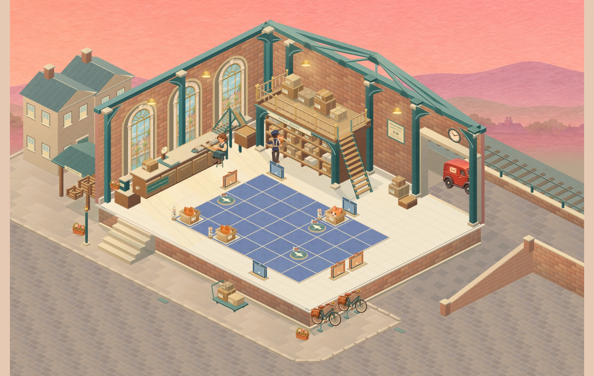
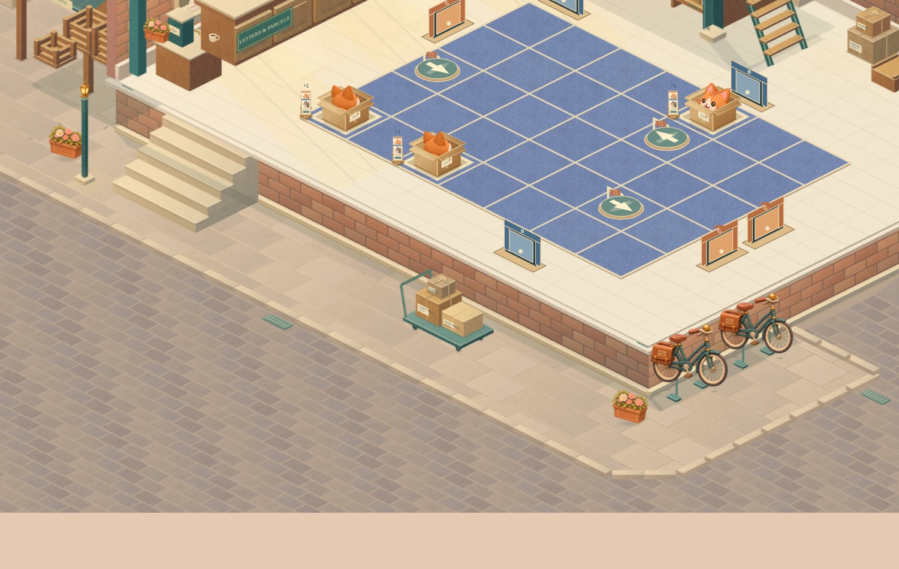
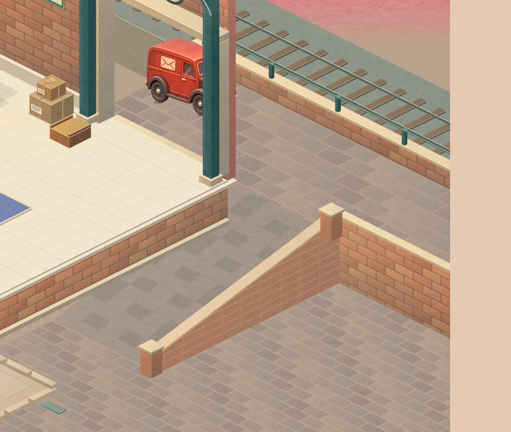

Actual renderer · 4-15 · maximum 7 × 5 board. Open any image for a closer view.
Where the building meets the street

The existing five steps meet the flagstones. Bikes and parcels sit against the foundation, leaving a continuous pedestrian passage.
The ramp joins the upper loading apron to the lower street. Its retaining wall continues into the upper-road edge, with supported ends and coping.The same postal round
The van keeps its accepted route along the upper service road and its existing 48-second schedule. The side ramp connects that road to the town street.
This silent clip contains actual renderer frames sampled at 24 fps. It shows the exchange, departure and return from seconds 20–48 of the existing loop.
Board sizes and chapter continuity
The exterior uses its own measured ground levels. The playable board, pieces, timing, routes and progress retain the accepted data.
Watch chapter, growth and exit checks
Chapter four teaching demonstrationExisting growth sceneExit retains the finished board
Compare the direction
Selected composition and previous playable scene
Selected exterior concept. Its redrawn hall and curved ramp are illustrative; the implementation retains the accepted hall and uses a measured straight ramp.Previous playable scene, captured at the same framing. Review scope
This checkpoint establishes the street connection and its construction. The wider station, richer town layers, matching window views and further exterior activity belong to the next backdrop pass.
- All 25 original solutions and all four board sizes checked.
- Van tyre support and clearance checked throughout the existing loop.
- Phone layout, pointer picking, save isolation and chapter controls checked in Chromium.
Physical iPhone/Safari performance remains a device check. Read the implementation and verification notes.